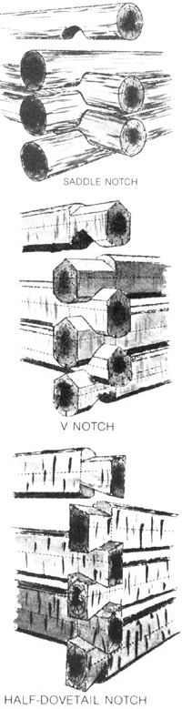

Peter Gott (on bench) demonstrates the balance and temerity required to pin rafter splices together. Locking notches are cut into the plate logs at each point where a rafter crosses. with a chisel or slick. Start the notch cuts with a chain saw, and finish them